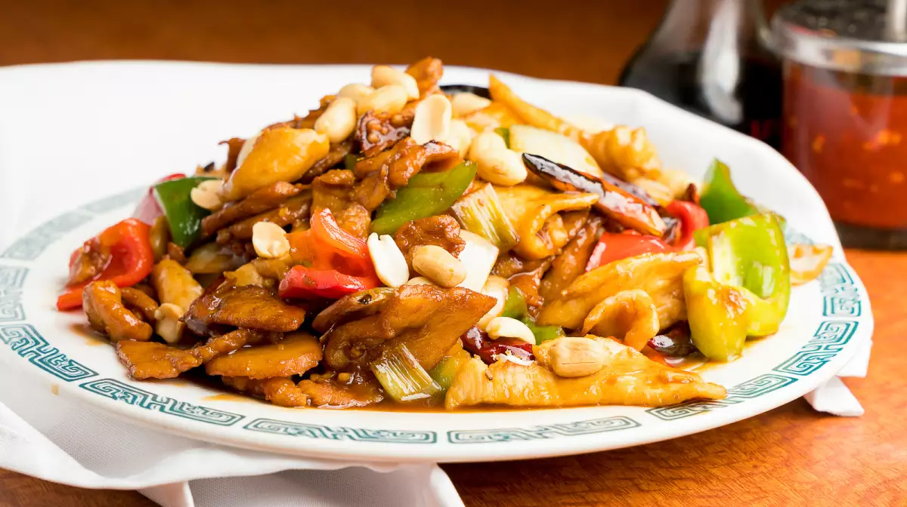

MADINA RESTURANT

summary
Madina was started in 2005 by two friends – one from Pakistan and the other from India, who wanted to share delicious traditional food with the Brooklyn community.
Madina’s chef specializes in preparing mouth-watering authentic food such as Chicken Biryani, shish kebab, Tandoori Chicken
Below are the type of the food we have
Tandoori Chicken
Tandoori Chicken is one of the most famous dishes in Indian Cuisine. The chicken is marinated in yogurt & lemon juice, and seasoned with plenty of spices & tandoori masala. What makes Tandoori Chicken so special.It is traditionally cooked at high temperatures in an earthen oven called a Tandoor.
Chana Masala
Channa Masala is spicy masala madeup of chana(gram or peas). It is a classic North Indian vegetarian dish - and is either eaten with rice or roti (chappati) as a main meal - or is served as a side-dish with a non-veg dish e.g. chicken or lamb.
Ingredients
Chana masala, also known as channay, chole masala, chole or chholay, is a dish originating from the Indian subcontinent. The main ingredient is a variety of chickpea called chana or kala chana. They are twice the diameter of typical chickpeas with a stronger flavour and firmer texture even after being cooke

Pizza
Elise Bauer
Homemade Pizza
xxxxxyyyyy16152 comments
DinnerItalianPizza
Classic homemade pizza recipe, including pizza dough and toppings, step-by-step instructions with photos. Make perfect pizza at home!
Homemade Pizza
Photography Credit: Elise Bauer
What to do when your 8-year old nephew comes to visit? Make pizza, of course! Well, not of course, actually. I didn’t think of it until we exhausted Sorry, Monopoly, and gin rummy. But it did turn out to be a brilliant idea as my father had just received a baking stone for Christmas, and my nephew loves pizza.
I told him if he helped me make it I would talk about him on my website and he would be famous. That seemed to get his attention. He thought the dough was “slimy and gross” but he loved picking his own toppings, and the finished product was “awesome”.
On Every Tuesday night biy one pizza get 1 douple Free